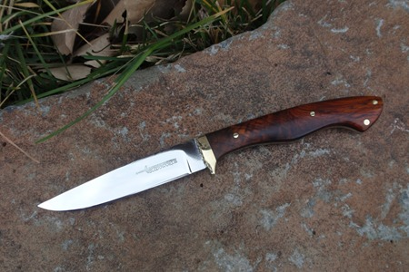

How We Started:
When our founder first started to make knives, he didn't start making knives as a hobby or to have something to do. He was living in Alaska and bought some remote property between Anchorage and Fairbanks. He knew that he needed some way to make money or trade for the things he would need. He hunted and fished all his life and knew how important a good knife was. So, he decided to start building custom knives.
He started Bloodworth Custom Knives over 35 years ago and have not stopped making knives since. Our knives have always been made with the finest materials available, and each knife is totally made in our shop. We grind the steel; heat treat the blade and finish the knife and sheath here in our shop. Above all our knives are “using knives”. If a knife won't cut, it isn't a knife. Bloodworth knives are balanced and feel good in your hand. The knives are strong and are designed to last a lifetime. Our sheaths are handmade, and hand stitched and fitted for your knife. We have High Standards for our knives, and we have customers tell us that their Bloodworth is the best knife they have ever owned.
